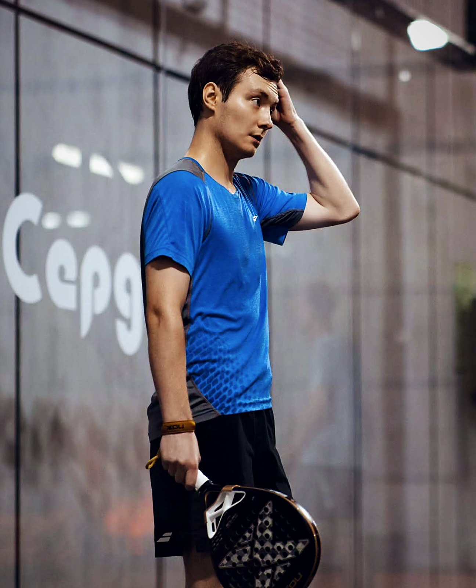
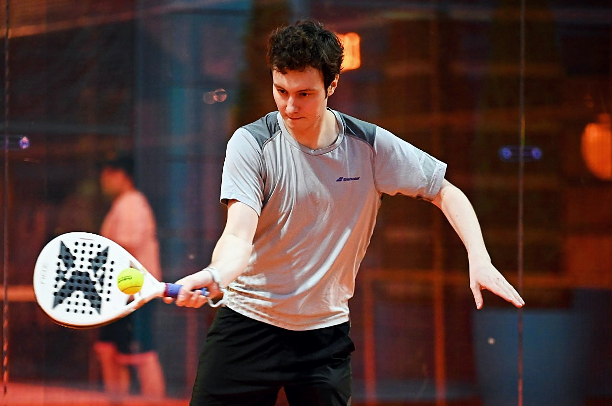
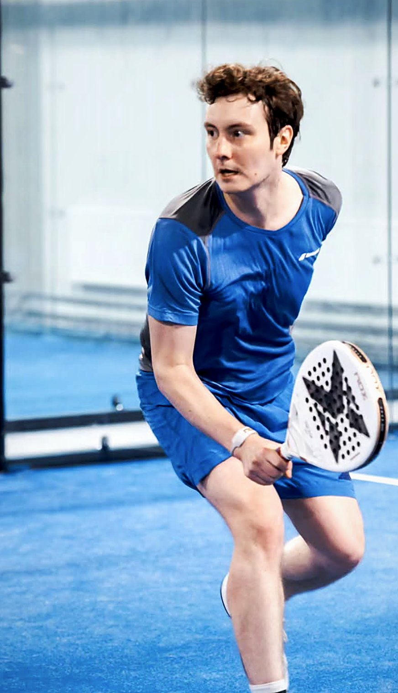
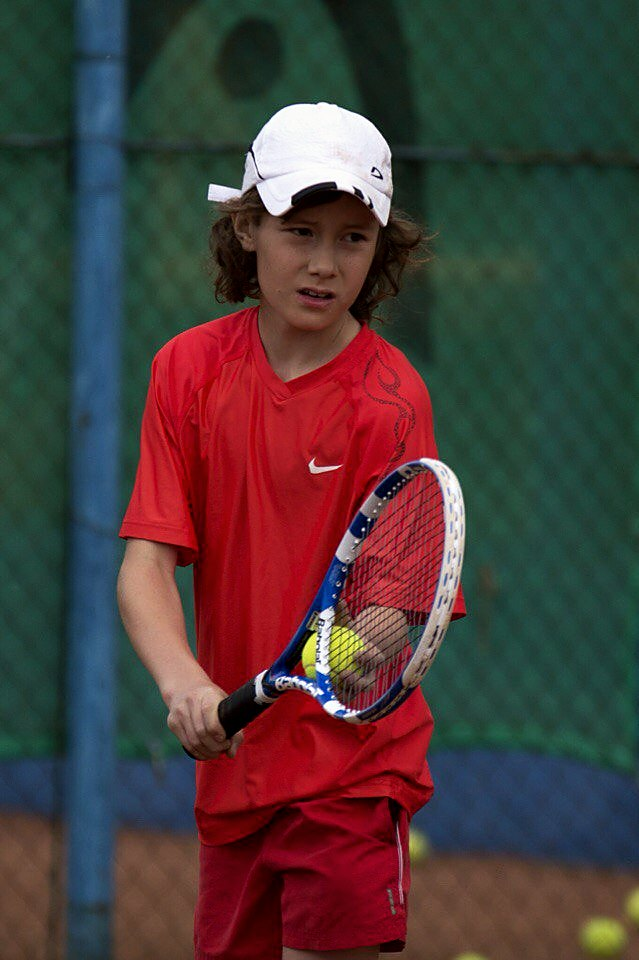

IanNikolaev
I play padel. By the end of 2026 I plan to break into the top 100 of the Russian Padel Federation ranking.
Since May I’ve played 14 official tournaments and finished in the top three six times.
I play padel. By the end of 2026 I plan to break into the top 100 of the Russian Padel Federation ranking.
Since May I’ve played 14 official tournaments and finished in the top three six times.

I opened with Could I get a racket? :)
and you asked to hear more about me. The racket can wait. Results first.
My latest eleven tournaments out of fourteen, most recent first.
Three second places and three thirds. August didn’t go well: 9–13 and 11–12. In September and early October I finished in the top three in three of five tournaments.

Placings are taken from my tournament history with the Russian Padel Federation.

I want to get into the top 100 of the Russian Padel Federation ranking before the season ends.
No promises. If we work together, you’ll see the whole way there, bad tournaments included.

Professional tennis, with tournaments. My best result was the top 200 of the Tennis Europe under-16 rankings. As a kid I had a contract with Babolat Russia.
Tennis Europe is a European junior ranking, not ATP.
These are things I can actually do. How much and on what terms, we can shape around your goals.
I play with a NOX racket at official tournaments, PRO-AM events and clubs. If people ask about the racket, I tell them honestly what I think.
If you provide demo rackets, I let partners and opponents try them and note what they liked and what they didn’t.
Preparation, matches, the racket. We agree on the list in advance, so you can use all of it on your own channels.
Once a month, a short note on which models players are curious about and what stops them from choosing.
I studied advertising. I can suggest a promo or a special project, and you decide whether it fits.
I work as an analyst and developer. I can help set up tracking: UTM tags, promo codes, a simple dashboard for sales and inquiries. After the pilot I’ll work out what actually worked. Happy to help with other technical tasks too; we’d agree on the scope.
I’m not a blogger. I don’t have a large audience or a production team.
I’m not a coach or a tournament organizer. Club events are only possible if we agree on them with the club and with you.
Yandex has nothing to do with this conversation: no access to employees, no corporate purchases, no partnership.
There’s no agreement between us yet. This page is a reason to talk.
One racket ≠ social media, video shoots and events all at once.Let’s agree on the scope of work and support together.
I suggest a short pilot. We fix the timeframe, my tasks and your costs up front.
A promo code shows where a buyer came from. It can’t tell you whether they would have bought anyway. That’s why we also look at the log and at what buyers say.
The pilot pays off when additional purchases cover its costs.
The threshold: pilot costs divided by the contribution margin per purchase, rounded up.
Costs include what the rackets actually cost the brand (not the retail price), shipping, a fee if we agree on one, and anything else we agree on. Contribution margin is what’s left from a sale after variable costs and discounts, not the full price.
I can run the numbers with your figures separately or on a call.